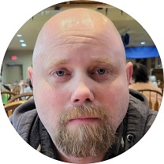

|  |
Jason AlexanderThe Ghost Guy |
I am Jason Alexander, and I go by the name, "The Ghost Guy", I study ghosts, and only Ghosts! I have been in the field for about 11 years, and started out as a paranormal investigator, with my own team, Bartlesville Paranormal Investigators, where we investigated homes and tried to find the reason a homeowner was scared of their own home. However, we have changed our focus and are now call Bartlesville Ghost Research Team. The team is now focused on trying out, what some may call, extreme techniques, which most investigators may find "Too Scary", but, we thrive on that!
I am also on teaching myself to code, Front end web development, such as HTML5, and CSS3, then will be moving to backend development, such as MongoDB, NODE.js, and Python. Learning on your own is difficult, but very rewarding when you figure it out! In the end, I will have pride in where I have come from. I may also find some local technical schools, to get more training, as I know the more knowledge you have, the better! Also, I have created this page with the class I am using on Udemy, and you will see it continue to grow as i learn more!
| HTML | ⭐⭐⭐ |
| CSS | ⭐ |
| Python | ⭐ |
| JavaScript | ⭐ |